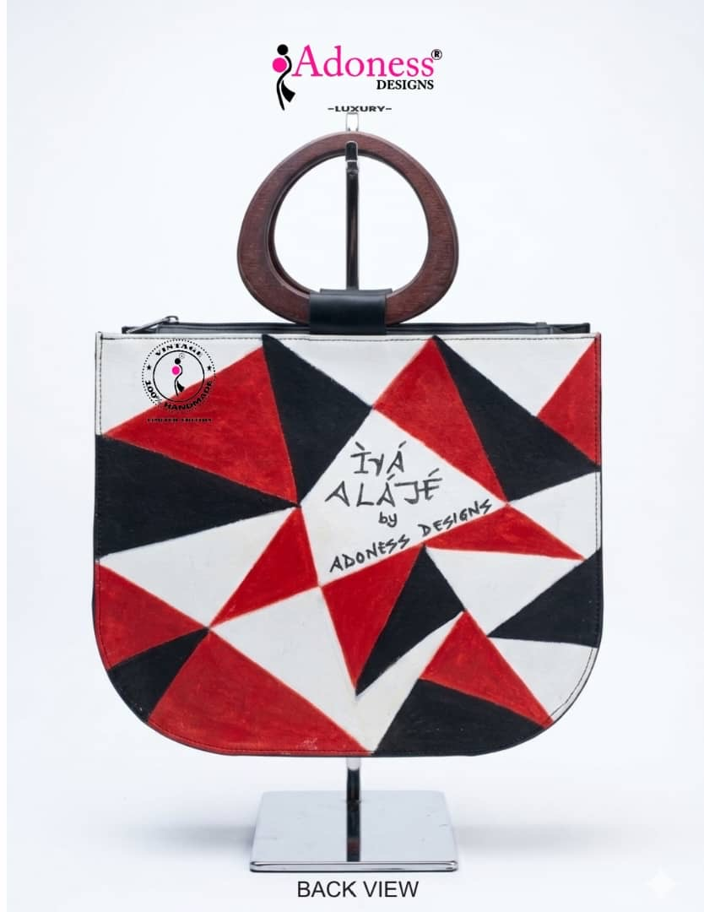
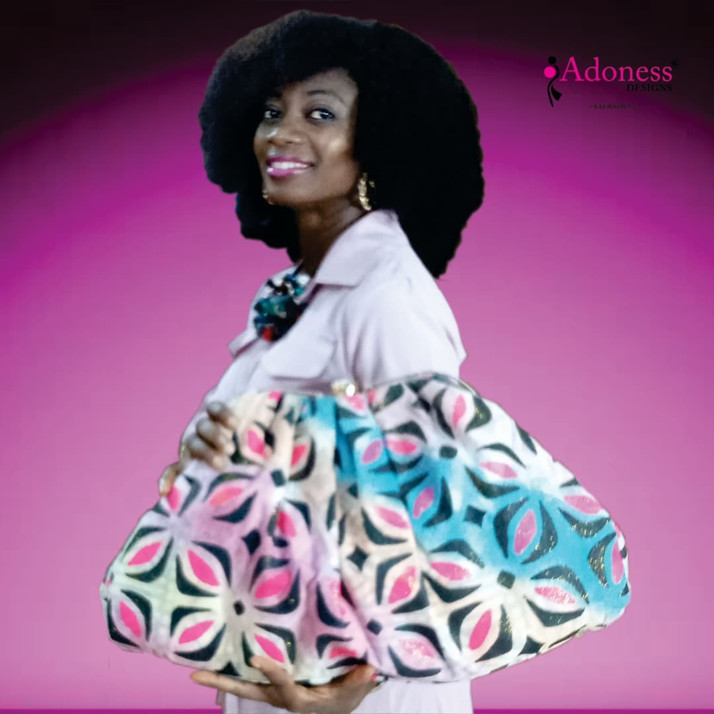

Ìyá Aláje
Story piecePainted fabric · sculptural handle
Adoness DesignsOriginal fabric art shaped into bags, fashion pieces and objects for everyday life. Each work carries the marks of the hand that made it.
Painted, stitched and assembled by hand. Browse a small selection from the Adoness fabric-art world.
Painted fabric · sculptural handle

Hand-painted textile · everyday form

A small world held in fabric

Painted canvas · layered colour

Hand-painted fabric · limited edition

Geometric colour · textile and form
Working titles and category labels are for this visual demo; confirm names and descriptions with the studio.
Move through the making: an idea becomes a composition, a composition finds its form, and the finished piece carries its own character.
A sketch, a dream, a scene from daily life or a shape in nature can become the first note in a new fabric-art story.
“We make fabric works of art to beautify people and their spaces—with imagination, craft and a story in every thread.”
Adoness is a fabric-art gallery: a place to design, create, showcase and share handmade work. Natural fabrics, original artwork and careful construction come together in pieces made to be lived with.
A design may begin as a sketch, an image, a material or a memory. It becomes a finished piece through many careful decisions and the touch of the maker.
Bring a fabric piece you already own. Adoness can work with you to transform it through hand-painted design and fabric art. The possibilities, process and suitability can be discussed with the studio.
Ask about Fabric Makeover
Bidemi is an entrepreneur, fine artist and the creative director of Adoness Designs. Her work brings together fashion, illustration and visual art. After training in fashion design and fine art, she began her fabric-art initiative in 2017—turning original ideas into handmade works on cloth.
Her practice draws inspiration from dreams, nature, culture and faith. In 2022, she was named a grant winner by the Flourish Africa Women Initiative.
Interested in a featured work, a custom piece or a Fabric Makeover? Contact the studio to begin a conversation.